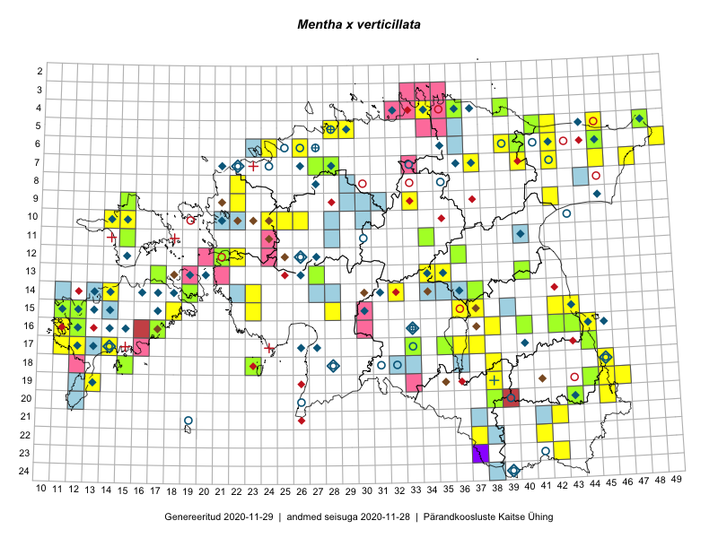

Mentha x verticillata
Uuendatud: 2016-12-01
Kaardile koondatud taksonid: Mentha x verticillata L.

Kaart põhineb 56 kirjel, neist vaatlusi 50 ja eksemplare 6.
Kuvatud viited 20 esimesele andmebaasikirjele, ülejäänud PlutoFis
- Tiit Hallikma, Toomas Kukk: 2015-08-27: 12-21: ala
- Katrit Karus, Tõnu Feldmann: 2015-07-27: 20-45: ala
- Tõnu Feldmann, Katrit Karus: 2015-07-27: 19-45: ala
- Ott Luuk, Hannes Pehlak: 2015-07-21: 06-49: ala
- Katrit Karus, Tõnu Feldmann: 2015-08-03: 14-32: ala
- Katrit Karus, Tõnu Feldmann: 2015-08-05: 13-35: ala
- Katrit Karus, Tõnu Feldmann: 2015-08-03: 13-34: ala
- Katrit Karus, Tõnu Feldmann: 2015-08-05: 13-34: ala
- Toomas Kukk, Peedu Saar, Mall Värva, Sander Laherand: 2014-07-27: 18-38: ala
- Meeli Mesipuu: 2015-07-11: 14-19: ala
- Toomas Kukk: 2014-07-09: 19-44: ala
- Thea Kull, Eerik Leibak: 2015-07-20: 06-45: ala
- Toomas Kukk, Sander Laherand, Peedu Saar, Mall Värva: 2014-07-27: 18-38: GPS punkt
- Thea Kull, Eerik Leibak: 2015-07-21: 07-47: ala
- Thea Kull, Eerik Leibak: 2015-07-21: 07-47: GPS punkt
- Thea Kull, Meeli Mesipuu: 2015-08-19: 19-45: ala
- Thea Kull, Meeli Mesipuu: 2015-08-12: 19-44: ala
- Thea Kull, Meeli Mesipuu: 2015-08-12: 16-43: ala
- Oliver Parrest: 2015-07-01: 19-13: ala
- Mari Reitalu: 2014-08-31: 17-12: ala